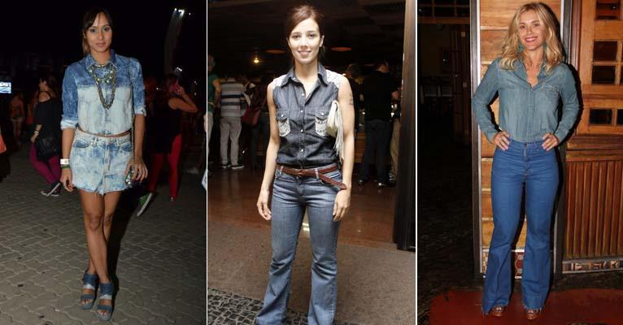
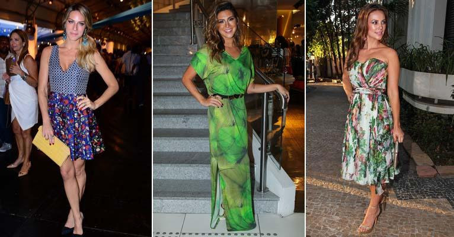

Étnico - Vale misturar influências das mais variadas etnias e folclores regionais. "O único cuidado é adaptar isso a um look urbano para que não fique caricato. Misturar estampas, uma delas com uma inspiração étnica e outra mais clássica é uma boa maneira de obter equilíbrio", garante a consultora.
Jeans - Apesar de democrática, a tendência ganha força com visual total, como combinação de camisa e calça, por exemplo, ou em peças únicas como macacão, considerado outro hit da temporada. 
Leveza - Tecidos fluidos e transparências são clássicos do verão, pois emprestam feminilidade ao visual. Em looks inteiros fica sofisticado, a ideia é misturar com outras peças estruturadas ou dar um toque de fluidez em uma composição urbana. Misturar tecidos de diferentes gramaturas é atual, moderno e sempre interessante.
Tropical- A estampa há muito tempo deixou de ser modinha para fazer parte do guarda-roupa de verão. Vale apostar sem medo, já que a padronagem se tornou um clássico, seja na forma de folhagens ou cenários naturais. 